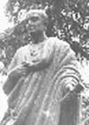

Felsefe tarihin trajik bir figürü olan Seneka (MÖ 4-MS 65), İmparator Neron’un (36-78) danışmanı ve öğretmeniydi. Genç imparatoru retorik, politika ve stoacı felsefe alanlarında eğitmiştir. Buna rağmen ihanete uğramış ve ünlü öğrencisi tarafından intihar etmeye zorlanmıştır. Böylece Roma’nın en önde gelen düşünürlerinden birinin kariyeri trajik bir biçimde son bulmuştur.

Seneka bugün İspanya sınırları içerisinde yer alan Cordoba’da doğdu. Roma’da prestijli bir akademide eğitim gördü. Genç bir öğrenciyken Yunan felsefe okulu Stoacılığa merak sardı. İlk olarak 200 yıl önce Atina’da ortaya çıkan Stoacılar, basit, erdemli bir yaşamın ve kaderi olduğu gibi kabullenmenin mutlululuğa giden yegane yol olduğuna inanmışlardı.
Ancak Stoacı bir kişiye göre Seneka’nın gençlik döneminde son derece hızlı bir yaşamı vardı. Politikaya girdikten sonra çapkınlıkları ile ün kazanmış ve 41 yılında İmparator Kaligula’nın (12-41) yeğeni ile birlikte olduğu için Korsika Adası’na sürgüne gönderilmişti. Seneka’nın günümüze kadar ulaşan yazılarının bir bölümü sekiz yıllık sürgün döneminde yazılmıştır.
49 yılında Roma’ya döndükten sonra Seneka, Neron’un öğretmeni oldu. Oyunlar, şiirler ve denemeler yazmaya devam etti. Neron 54 yılında henüz 16 yaşındayken imparator olduğunda Seneka genç imparatorun en yakın danışmanları arasına girdi. Hatta Neron’un, annesi Agrippina’yı (15-59) öldürmek için düzenlediği komploya bile ortak oldu. Seneka defalarca emekli olmak istemişse de Neron danışmanının Roma’da kalması için ısrar etti.
65 yılında Neron, Seneka’yı kendisini öldürmek için düzenlenen Pisonian Komplosu’na katılmakla suçladı. İmparator, öğretmenine intihar etmesini emretti. Seneka bu emre bir Stoacı gibi riayet etti ve bileklerini kesti. Ancak yaraları kendisini öldürecek derecede derin olmadığı için en sonunda küvetteki suyun içine dalarak görevini tamamladı.
Ek Bilgiler
1- Romalı tarihçi Suetonius’a (69-130) göre Seneka kısa bir süreliğine vejetaryen olmuştu. Ancak vejetaryenlere güvenmeyen İmparator Tiberius (MÖ 42-MS 37) onu et yemeğe zorlamıştı.
2- Seneka’nın yazıları İngilizce’ye ilk olarak 1614 yılında çevrilmiştir.
3- Seneka’nın karısı Paulina kocasıyla birlikte intihar etmeye kalkmış, ancak Neron’un askerleri emrin sadece filozofa verildiğini ileri sürerek onu engellemişlerdir.